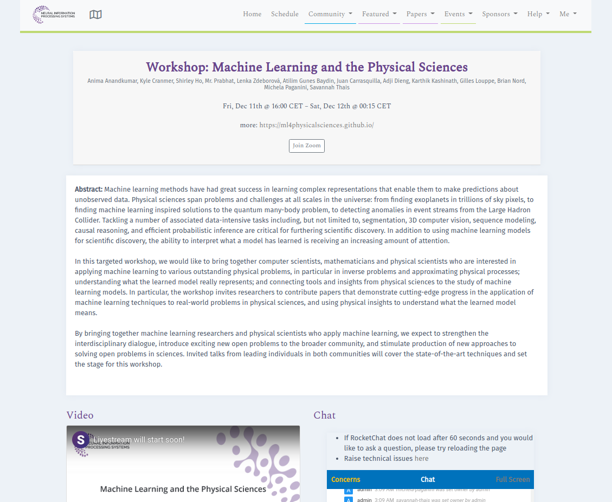
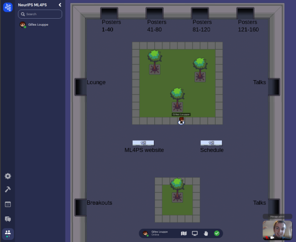
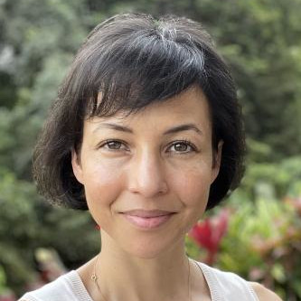
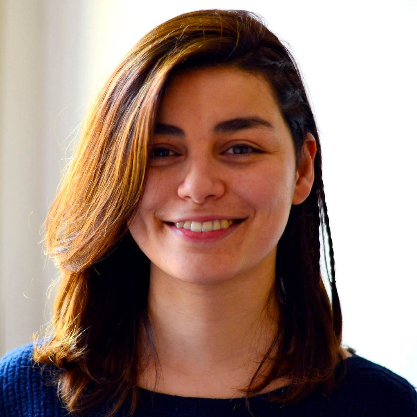

-

Official NeurIPS ML4PS schedule
(for NeurIPS attendees) -

GatherTown poster rooms GatherTown breakout room(for NeurIPS attendees)
How to attend
The workshop is taking place on Monday, December 13, 2021. It will be a combination of: (1) streamed invited talks and Q&A sessions, which can be watched live via SlidesLive or Zoom, and (2) poster sessions for accepted papers and community development breakouts, which are hosted in Gather Town.
Registration: You need to have a NeurIPS registration in order to attend and/or present your poster at this workshop. For registration please refer to NeurIPS 2021 website.
Streamed talks and Q&A sessions: Follow the official NeurIPS ML4PS schedule link on top of this page, which will take you to the page with the live SlidesLive stream and a RocketChat box where you can ask questions during the Q&A sessions. On the same page you can also find a Zoom link to join the same stream as a Zoom webinar (optional).
Poster sessions and community development breakouts: Follow the ML4PS Gather Town link (TO BE ADDED SOON) on top of this page that will take you to the workshop's Gather Town space, an interactive online environment where you can walk around and browse the posters, and interact with poster presenters and other attendees. This is the same setup used by NeurIPS main conference, and you can see an introductory video about Gather Town poster sessions here.
Note that all accepted papers and posters are also accessible publicly on this web page below.
Invited Talks
-

Megan AnsdellNASA Headquarters
-

Bingqing ChengUniversity of Cambridge
-
Surya GanguliMeta AI / Stanford University
-

Max WellingUniversity of Amsterdam
-

Laure ZannaNew York University
Panel Discussion
-

Jennifer ChayesUC Berkeley
-

Marylou GabriéNew York University / Flatiron Institute
-

Michela PaganiniDeepMind
-

Sara SollaNorthwestern University
-

Moderator: Lenka ZdeborováEPFL
Schedule
Check the times for your local time zone
- The workshp's official NeurIPS schedule page allows you to select your time zone, and the times should appear in your local time.
- Alternatively, we provide a schedule document that lists the schedule in several time zones.
Note: the times given below are in US/Eastern (UTC-5).
Session 1
| 09:00 AM – 09:10 AM | SlidesLive/Zoom |
Opening remarks (live) |
| 09:10 AM – 09:35 AM | SlidesLive/Zoom |
Invited talk: "Accelerating simulations of nature, both classical and quantum, with equivariant deep learning" (live) Max Welling (University of Amsterdam) |
| 09:35 AM – 09:45 AM | SlidesLive/Zoom |
Q&A with Max Welling (live) |
| 09:45 AM – 10:10 AM | SlidesLive/Zoom |
Invited talk: "Predicting material properties with the help of machine learning" (live) Bingqing Cheng (University of Cambridge) |
| 10:10 AM – 10:20 AM | SlidesLive/Zoom |
Q&A with Bingqing Cheng (live) |
| 10:20 AM – 10:35 AM | SlidesLive/Zoom |
Contributed talk: "Crystal Diffusion Variational Autoencoder for Periodic Material Generation" (live) Tian Xie (Massachusetts Institute of Technology) |
| 10:35 AM – 12:05 PM | Gather Town |
Poster session (live) |
Session 2
| 12:05 PM – 12:10 PM | SlidesLive/Zoom |
Opening remarks (live) |
| 12:10 PM – 01:10 PM | SlidesLive/Zoom |
Panel discussion Jennifer Chayes (UC Berkeley) Marylou Gabrié (New York University / Flatiron Institute) Michela Paganini (DeepMind) Sara Solla (Northwestern University) Moderator: Lenka Zdeborová (EPFL) |
| 01:10 PM – 01:35 PM | SlidesLive/Zoom |
Invited talk: "NASA's efforts & opportunities to support ML in the Physical Sciences" (live) Megan Ansdell (NASA Headquarters) |
| 01:35 PM – 01:45 PM | SlidesLive/Zoom |
Q&A with Megan Ansdell (live) |
| 01:45 PM – 02:00 PM | SlidesLive/Zoom |
Contributed talk: "Self-supervised similarity search for large scientific datasets" (live) George Stein (UC Berkeley) |
| 02:00 PM – 03:30 PM | Gather Town |
Poster session (live) |
Session 3
| 03:30 PM – 03:35 PM | SlidesLive/Zoom |
Opening remarks (live) |
| 03:35 PM – 04:00 PM | SlidesLive/Zoom |
Invited talk: "From the geometry of high dimensional energy landscapes to optimal annealing in a dissipative many body quantum optimizer" Surya Ganguli (Meta AI / Stanford University) |
| 04:00 PM – 04:10 PM | SlidesLive/Zoom |
Q&A with Surya Ganguli (live) |
| 04:10 PM – 04:35 PM | SlidesLive/Zoom |
Invited talk: "The future of climate modeling in the age of machine learning" Laure Zanna (New York University) |
| 04:35 PM – 04:45 PM | SlidesLive/Zoom |
Q&A with Laure Zanna (live) |
| 04:45 PM – 05:00 PM | SlidesLive/Zoom |
Contributed talk: "Amortized Bayesian inference of gravitational waves with normalizing flows" (live) Maximilian Dax (Max Planck Institute for Intelligent Systems) |
| 05:00 PM – 06:00 PM | Gather Town |
Community development breakouts (live) |
| 06:00 PM – 06:30 PM | SlidesLive/Zoom |
Feedback from community development breakouts (live) |
Organizers
-

Atılım Güneş BaydinUniversity of Oxford
-

Juan Felipe CarrasquillaVector Institute / University of Waterloo
-

Adji Bousso DiengPrinceton University
-

Emine KucukbenliHarvard University / Boston University
-

Gilles LouppeUniversity of Liège
-

Benjamin NachmanLawrence Berkeley National Laboratory
-

Brian NordFermilab
-

Savannah ThaisPrinceton University / IRIS-HEP
Steering Committee
-

Anima AnandkumarCaltech / NVIDIA
-

Kyle CranmerNew York University
-

Prabhat RamMicrosoft
-
Lenka ZdeborováEPFL
Papers/Posters
There are 147 papers accepted for presentation at the workshop.
| 1 | Flood Segmentation on Sentinel-1 SAR Imagery with Semi-Supervised Learning [pdf] Siddha Ganju (Nvidia Corporation)*; Sayak Paul (Carted) |
| 2 | A General Method for Calibrating Stochastic Radio Channel Models with Kernels [pdf] Ayush Bharti (Aalto University)*; Francois-Xavier Briol (Alan Turing Institute); Troels Pedersen (Aalborg University) |
| 3 | A Multi-Survey Dataset and Benchmark for First Break Picking in Hard Rock Seismic Exploration [pdf] Pierre-Luc St-Charles (Mila)*; Bruno Rousseau (Mila); Joumana Ghosn (Mila); Jean-Philippe Nantel (Mila); Gilles Bellefleur (NRCan); Ernst Schetselaar (NRCan) |
| 4 | Using Mask R-CNN to detect and mask ghosting and scattered-light artifacts in astronomical images [pdf] Dimitrios Tanoglidis (University of Chicago)*; Alex Drlica-Wagner (Fermilab/University of Chicago); Aleksandra Ciprijanovic (Fermilab) |
| 5 | Neural density estimation and uncertainty quantification for laser induced breakdown spectroscopy spectra [pdf] Katiana Kontolati (Johns Hopkins University)*; Natalie Klein (Los Alamos National Laboratory); Nishant Panda (Los Alamos National Lab); Diane Oyen (Los Alamos National Lab) |
| 6 | Robustness of deep learning algorithms in astronomy - galaxy morphology studies [pdf] Aleksandra Ciprijanovic (Fermilab)*; Diana Kafkes (Fermilab); Gabriel Nathan Perdue (Fermilab); Kevin Pedro (Fermilab); Gregory Snyder (STScI); Francisco Javier Sanchez Lopez (Fermilab); Sandeep Madireddy (Argonne National Laboratory); Stefan Wild (Argonne National Laboratory); Brian Nord (Fermi National Accelerator Laboratory) |
| 7 | Uncertainty quantification for ptychography using normalizing flows [pdf] Agnimitra Dasgupta (University of Southern California)*; Zichao Wendy Di (Argonne National Laboratory) |
| 8 | Model Inversion for Spatio-temporal Processes using the Fourier Neural Operator [pdf] Daniel B MacKinlay (CSIRO Data61)*; Daniel E Pagendam (CSIRO Data61); Petra Kuhnert (); Tao Cui (Queensland Water); Sreekanth Janardhanan (CSIRO); David Robertson (CSIRO) |
| 9 | Mixture-of-Experts Ensemble with Hierarchical Deep Metric Learning for Spectroscopic Identification [pdf] Masaki Adachi (University of Oxford)* |
| 10 | Amortized Variational Inference for Type Ia Supernova Light Curves [pdf] Alexis Sánchez (Universidad de Concepción)*; Pablo Andres Huijse (Universidad Austral de Chile); Francisco Förster (Millennium Institute of Astrophysics); Guillermo Cabrera-Vives (University of Concepción) |
| 11 | Neural Symplectic Integrator with Hamiltonian Inductive Bias for the Gravitational N-body Problem [pdf] Maxwell X. Cai (SURF / Leiden University)*; Simon P Zwart (Leiden University); Damian Podareanu (SURF) |
| 12 | Using neural networks to reduce communication in numerical solution of partial differential equations [pdf] Laurent White (Advanced Micro Devices, Inc.)*; Ganesh Dasika (AMD Research); Saketh Rama (Advanced Micro Devices, Inc.) |
| 13 | Modeling Advection on Directed Graphs using Mat\'{e}rn Gaussian Processes for Traffic Flow [pdf] Nadim Saad (Stanford University)*; Danielle Maddix (Amazon Research ); Yuyang Wang (Amazon) |
| 14 | Unsupervised Spectral Unmixing For Telluric Correction Using A Neural Network Autoencoder [pdf] Rune D. Kjærsgaard (DTU Compute)*; Aaron Bello-Arufe (DTU Space); Alexander Rathcke (DTU Space); Lars Buchhave (DTU Space); Line Clemmensen (DTU) |
| 15 | S3RP: Self-Supervised Super-Resolution and Prediction for Advection-Diffusion Process [pdf] Chulin Wang (Northwestern University)*; Kyongmin Yeo (IBM Research); Andres Codas (IBM Research); Xiao Jin (RPI); Bruce G Elmegreen (IBM Research); Levente Klein (IBM Research) |
| 16 | Automatically detecting anomalous exoplanet transits [pdf] Christoph J Hönes (University of Amsterdam)*; Benjamin K Miller (University of Amsterdam); Ana Heras (ESA/ESTEC); Bernard Foing (Leiden University) |
| 17 | DeepZipper: A Novel Deep Learning Architecture for Lensed Supernovae Identification [pdf] Robert Morgan (University of Wisconsin-Madison)*; Brian Nord (Fermi National Accelerator Laboratory); Keith Bechtol (University of Wisconsin-Madison); Jimena González ( University of Wisconsin-Madison) |
| 18 | Rethinking Graph Transformers with Spectral Attention [pdf] Devin Kreuzer (McGill University)*; Dominique Beani (InVivo AI); William L Hamilton (McGill University); Vincent Létourneau (Université de Montréal); Prudencio Tossou (Valence Discovery) |
| 19 | Using physics-informed regularization to improve extrapolation capabilities of neural networks [pdf] David Davini (UCLA); Bhargav Samineni (New Jersey Institute of Technology); Benjamin Thomas (Louisiana State University); Amelia Huong Tran (Mount Holyoke College); Cherlin Zhu (Johns Hopkins University); Kyung Ha (UCLA); Ganesh Dasika (AMD Research); Laurent White (Advanced Micro Devices, Inc.)* |
| 20 | Single Image Super-Resolution with Uncertainty Estimation for Lunar Satellite Images [pdf] Jose Ignacio Delgado-Centeno (University of Luxembourg)*; Paula Harder (Fraunhofer ITWM); Ben Moseley (University of Oxford); Valentin T Bickel (ETH Zurich); Siddha Ganju (Nvidia); Miguel Olivares (Universidad de Luxemburgo); Freddie Kalaitzis (University of Oxford) |
| 21 | Deep learning techniques for a real-time neutrino classifier [pdf] Astrid Anker (University of California, Irvine)* |
| 22 | Inferring dark matter substructure with global astrometry beyond the power spectrum [pdf] Siddharth Mishra-Sharma (MIT)* |
| 23 | Stochastic Adversarial Koopman Model for Dynamical Systems [pdf] Kaushik Balakrishnan (Ford Greenfield Labs)*; Devesh Upadhyay (Ford Motor Co.) |
| 24 | Discovering PDEs from Multiple Experiments [pdf] Georges Tod (CRI)*; Gert-Jan Both (CRI); Remy Kusters (CRI) |
| 25 | Nonlinear pile-up separation with LSTM neural networks for cryogenic particle detectors [pdf] Felix Wagner (HEPHY Vienna)* |
| 26 | Machine learning accelerated particle-in-cell plasma simulations [pdf] Ralph Kube (Princeton Plasma Physics Laboratory)*; Benjamin Sturdevant (Princeton Plasma Physics Laboratory); Randy M Churchill (Princeton Plasma Physics Laboratory) |
| 27 | Calibrating Electrons and Photons in the CMS ECAL using Graph Neural Networks [pdf] Simon Rothman (Massachusetts Institute of Technology)*; Rajdeep Chatterjee (University of Minnesota); Lindsey Gray (Fermilab) |
| 28 | Re-calibrating Photometric Redshift Probability Distributions Using Feature-space Regression [pdf] Biprateep Dey (University of Pittsburgh)*; Jeffrey Newman (University of Pittsburgh); Brett Andrews (University of Pittsburgh); Ann Lee (Carnegie Mellon University); Rafael Izbicki (UFSCar); David Zhao (Carnegie Mellon University); Markus Rau (Argonne National Laboratory); Alex Malz (German Centre for Cosmological Lensing) |
| 29 | Towards Improved Global River Discharge Prediction in Ungauged Basins Using Machine Learning and Satellite Observations [pdf] Aggrey Muhebwa (University of Massachusetts - Amherst); Sungwook Wi (University Of Massachusetts - Amherst); Colin J. Gleason (University Of Massachusetts - Amherst); Jay Taneja (University of Massachusetts)* |
| 30 | Visualization of nonlinear modal structures for three-dimensional unsteady fluid flows with customized decoder design [pdf] Kazuto Hasegawa (Keio university)*; Kai Fukami (University of California, Los Angeles); Koji Fukagata (Keio University) |
| 31 | Sharpness-Aware Minimization for Robust Molecular Dynamics Simulations [pdf] Hikaru Ibayashi (University of Southern California)*; Ken-ichi Nomura (University of Southern California); Pankaj Rajak (Argonne National Laboratory); Taufeq Mohammed (University of Southern California); Ankit Mishra (University of Southern California); Aravind Krishnamoorthy (University of Southern California); Aiichiro Nakano (University of Southern California) |
| 32 | A posteriori learning of quasi-geostrophic turbulence parametrization: an experiment on integration steps [pdf] Hugo Frezat (Univ. Grenoble Alpes)*; Julien Le Sommer (Univ. Grenoble Alpes); ronan fablet (IMT Atlantique); Guillaume Balarac (Univ. Grenoble Alpes); Redouane Lguensat (LOCEAN-IPSL) |
| 33 | Vision transformers and techniques for improving solar wind speed forecasts using solar EUV images [pdf] Filip Svoboda (University of Cambridge)*; Edward J E BROWN (Cambridge) |
| 34 | Deep-DFT: Physics-ML hybrid method to predict DFT energy using Transformer [pdf] Youngwoo Cho (Korea Advanced Institute of Science and Technology); Hongkee Yoon (KAIST); Seunghoon Yi (Seoul National University); Jaegul Choo (Korea Advanced Institute of Science and Technology); Myung Joon Han (KAIST); Joonseok Lee (Google Research & Seoul National University)*; Sookyung Kim (PARC) |
| 35 | Fine-tuning Vision Transformers for the Prediction of State Variables in Ising Models [pdf] Onur Kara (Hindsight Technology Solutions)*; Arijit Sehanobish (Yale University); Hector Corzo ( Center for Chemical Computation and Theory at UC Merced) |
| 36 | Physics-informed neural network for inversely predicting effective electric permittivities of metamaterials [pdf] Parama Pal (Tata Consultancy Services Limited)*; Prajith P (Tata Consultancy Services Limited); Anirban Chaudhuri (Tata Consultancy Services Limited) |
| 37 | Learning Size and Shape of Calabi-Yau Spaces [pdf] Robin Schneider (Uppsala University)*; Andre Lukas (Oxford University); Fabian Ruehle (Northeastern University); Magdalena Larfors (Uppsala University) |
| 38 | Learning Full Configuration Interaction Electron Correlations with Deep Learning [pdf] Hector Corzo ( Center for Chemical Computation and Theory at UC Merced)*; Arijit Sehanobish (Yale University); Onur Kara (Hindsight Technology Solutions) |
| 39 | A deep ensemble approach to X-ray polarimetry [pdf] Abel L Peirson (Stanford University)* |
| 40 | Learning Discrete Neural Reaction Class to Improve Retrosynthesis Prediction [pdf] Theophile Gaudin (IBM Research)*; Animesh Garg (University of Toronto, Vector Institute, Nvidia); Yuhuai Wu (University of Toronto); Alan Aspuru-Guzik (University of Toronto); Robert Pollice (University of Toronto) |
| 41 | Classical variational simulation of the Quantum Approximate Optimization Algorithm [pdf] Matija Medvidović (Columbia University)*; Giuseppe Carleo (EPFL) |
| 42 | Deep Surrogate for Direct Time Fluid Dynamics [pdf] Lucas T Meyer (INRIA)*; Louen Pottier (EDF); Alejandro Ribes (EDF); Bruno Raffin (University of Grenoble) |
| 43 | Normalizing Flows for Random Fields in Cosmology [pdf] Adam Rouhiainen (University of Wisconsin-Madison)*; Utkarsh Giri (University of Wisconsin-Madison); Moritz Münchmeyer (University of Wisconsin-Madison) |
| 44 | Machine Learning and Dynamical Models for Sub-seasonal Climate Forecasting [pdf] Sijie He (University of Minnesota)*; Xinyan Li (University of Minnesota); Laurie Trenary (George Mason University); Benjamin Cash (George Mason University); Timothy DelSole (George Mason University); Arindam Banerjee (University of Illinois Urbana-Champaign) |
| 45 | Multiway Ensemble Kalman Filter [pdf] Yu Wang (University of Michigan)*; Alfred Hero (University of Michigan) |
| 46 | Neural quantum states for supersymmetric quantum gauge theories [pdf] Enrico Rinaldi (University of Michigan)*; Xizhi Han (Kavli Institute for Theoretical Physics) |
| 47 | A Quasi-Universal Neural Network to Model Structure Formation in the Universe [pdf] Neerav Kaushal (Michigan Technological University)*; Francisco Villaescusa-Navarro (Princeton University); Elena Giusarma (Michigan Technological University); Yin Li (Flatiron Institute); Mauricio Reyes (Michigan Technological University) |
| 48 | Crystal Diffusion Variational Autoencoder for Periodic Material Generation [pdf] Tian Xie (Massachusetts Institute of Technology)*; Xiang Fu (MIT); Octavian Ganea (MIT); Dr.Regina Barzilay (Massachusetts institute of technology); Tommi Jaakkola (MIT) |
| 49 | Learning governing equations of interacting particle systems using Gaussian process regression [pdf] Jinchao Feng (Johns Hopkins University); Yunxiang Ren (Harvard University); Sui Tang (UCSB)* |
| 50 | Marrying the benefits of Automatic and Numerical Differentiation in Physics-Informed Neural Network [pdf] Pao-Hsiung Chiu (Institute of High Performance Computing)*; Jian Cheng Wong (Institute of High Performance Computing ); Chin Chun Ooi (IHPC); My Ha Dao (Institute of High Performance Computing ); Yew Soon Ong (Nanyang Technological University, Nanyang View, Singapore) |
| 51 | G-SpaNet: Generalized Permutationless Set Assignment for Particle Physics using Symmetry Preserving Attention [pdf] Alexander Shmakov (UC Irvine)*; Michael Fenton (UC Irvine); David Ho (National Tsing Hua University); Shih-chieh Hsu (University of Washington); Daniel Whiteson (UC Irvine); Pierre Baldi (UC Irvine) |
| 52 | Dispersive qubit readout with machine learning [pdf] Enrico Rinaldi (University of Michigan)*; Roberto Di Candia (Aalto University); Simone Felicetti (Consiglio Nazionale delle Ricerche); Fabrizio Minganti (EPFL) |
| 53 | Scaling Up Machine Learning For Quantum Field Theory with Equivariant Continuous Flows [pdf] Pim de Haan (University of Amsterdam / Qualcomm AI Research)*; Corrado Rainone (Qualcomm AI Research); Miranda Cheng (University of Amsterdam); Roberto Bondesan (Qualcomm AI Research) |
| 54 | Equivariant Transformers for Neural Network based Molecular Potentials [pdf] Philipp Thölke (Osnabrück University)*; Gianni De Fabritiis (Universitat Pompeu Fabra) |
| 55 | Fast Approximate Model for the 3D Matter Power Spectrum [pdf] Arrykrishna Mootoovaloo (Imperial College London)* |
| 56 | 3D Infomax improves GNNs for Molecular Property Prediction [pdf] Hannes Stärk (Technical University of Munich)*; Dominique Beani (InVivo AI); Gabriele Corso (MIT); Prudencio Tossou (Valence Discovery); Christian Dallago (Technical University of Munich); Stephan Günnemann (Technical University of Munich); Pietro Lió (University of Cambridge) |
| 57 | Learning the exchange-correlation functional from nature with differentiable density functional theory [pdf] Muhammad F Kasim (Machine Discovery)*; Sam Vinko (University of Oxford) |
| 58 | RBSRICNN: Raw Burst Super-Resolution through Iterative Convolutional Neural Network [pdf] Rao Muhammad Umer (University of Udine)*; CHRISTIAN MICHELONI (University of Udine, Italy) |
| 59 | Classifying Anomalies THrough Outer Density Estimation (CATHODE) [pdf] Anna Hallin (Rutgers University); Joshua Isaacson (Fermi National Accelerator Laboratory); Gregor Kasieczka (Universität Hamburg); Claudius Krause (Rutgers University); Benjamin Nachman (Lawrence Berkeley National Laboratory); Tobias Quadfasel (Universität Hamburg); Matthias Schlaffer (Université de Genève); David Shih ( Rutgers University ); Manuel Sommerhalder (Universität Hamburg)* |
| 60 | Unsupervised topological learning approach of crystal nucleation in pure Tantalum [pdf] Sébastien Becker (Univ. Grenoble Alpes, Inria, CNRS, Grenoble INP*, SIMAP, 38000 Grenoble); Emilie Devijver (Univ. Grenoble Alpes, Inria, CNRS, Grenoble INP*, LIG, 38000 Grenoble)*; Rémi Molinier (University Grenoble Alpes ); Noël Jakse (Univ. Grenoble Alpes, Inria, CNRS, Grenoble INP*, SIMAP, 38000 Grenoble) |
| 61 | DeepBO: Deep Neural-Network Bayesian Optimization of Polaritonic Metasurfaces in Continuous Space [pdf] Zihan Zhang (Shanghai Jiao Tong University); Kehang Cui (Shanghai Jiao Tong University)*; Jintao Chen (Shanghai Jiao Tong University) |
| 62 | A data-driven wall model for the prediction of turbulent flow separation over periodic hills [pdf] Margaux Boxho (Cenaero)*; Michel Rasquin (Cenaero); Thomas Toulorge (Cenaero); Sophie Mouriaux (Safran Tech, Paris); Grégoire Winckelmans (UCLouvain); Koen Hillewaert (ULiege) |
| 63 | Extending turbulence model uncertainty quantification using machine learning [pdf] Marcel Matha (German Aerospace Center)*; Christian Morsbach (German Aerospace Center) |
| 64 | Missing Data Imputation for Galaxy Redshift Estimation [pdf] Kieran Luken (Western Sydney University)*; Rabina Padhy (Western Sydney University); Rosalind Wang (Western Sydney University) |
| 65 | Arbitrary Marginal Neural Ratio Estimation for Simulation-based Inference [pdf] François Rozet (University of Liège)*; Gilles Louppe (University of Liège) |
| 66 | Amortized Bayesian inference of gravitational waves with normalizing flows [pdf] Dax Maximillian (MPI for Intelligent Systems, Tübingen)*; Stephen R Green (Max Planck Institute for Gravitational Physics); Jonathan Gair (Max Planck Institute for Gravitational Physics); Jakob Macke (University of Tuebingen); Alessandra Buonanno (Max Planck Institute for Gravitational Physics); Bernhard Schölkopf (MPI for Intelligent Systems, Tübingen) |
| 67 | Weight Pruning and Uncertainty in Radio Galaxy Classification [pdf] Anna Scaife (University of Manchester)*; Devina Mohan (University of Manchester) |
| 68 | Automatic differentiation approach for reconstructing spectral functions with neural networks [pdf] Lingxiao Wang (Frankfurt Institute for Advanced Studies); Shuzhe Shi (Center for Nuclear Theory, Department of Physics and Astronomy, Stony Brook University); Kai Zhou (Frankfurt Institute for Advanced Studies)* |
| 69 | Characterizing γ-ray maps of the Galactic Center with neural density estimation [pdf] Siddharth Mishra-Sharma (MIT)*; Kyle Cranmer (New York University) |
| 70 | Bayesian Stokes inversion with Normalizing flows [pdf] Carlos Jose D Diaz Baso (Stockholm University)*; Andrés Asensio Ramos (Instituto de Astrofísica de Canarias); Jaime de la Cruz Rodriguez (Stockholm University) |
| 71 | Generative models for hadron shower simulation [pdf] Sascha Diefenbacher (Universität Hamburg)*; Erik Buhmann (Universität Hamburg); Engin Eren (DESY); Frank Gaede (DESY); Daniel Hundhausen (Universität Hamburg); Gregor Kasieczka (Universität Hamburg); William Korcari (Universität Hamburg); Katja Krueger (DESY); Peter McKeown (DESY); Lennart Rustige (DESY, CDCS) |
| 72 | Detecting Spatiotemporal Lightning Patterns: An Unsupervised Graph-Based Approach [pdf] Emma Benjaminson (Carnegie Mellon University)*; Satyarth Praveen (Lawrence Berkeley National Labs); Giulia Luise (Imperial College London); Juan Emmanuel Johnson (IGE); Richard Strange (Trillium Technologies, Inc.); Milad Memarzadeh (NASA); nadia ahmed (university of california, irvine) |
| 73 | Uncertainty Aware Learning for High Energy Physics With A Cautionary Tale [pdf] Aishik Ghosh (University of California, Irvine)*; Daniel Whiteson (University of California, Irvine); Benjamin Nachman (Lawrence Berkeley National Laboratory) |
| 74 | Error Analysis of Kilonova Surrogate Models [pdf] Kamile Lukosiute (University of Amsterdam)*; Brian Nord (Fermi National Accelerator Laboratory); Zoheyr Doctor (Northwestern University); Marcelle Soares-Santos (University of Michigan); Geert Raaijmakers (University of Amsterdam) |
| 75 | Can semi-supervised learning reduce the amount of manual labelling required for effective radio galaxy morphology classification? [pdf] Inigo V Slijepcevic (University of Manchester)*; Anna Scaife (University of Manchester) |
| 76 | A simple equivariant machine learning method for dynamics based on scalars [pdf] Weichi Yao (New York University)*; Kate Storey-Fisher (NYU); David Hogg (NYU); Soledad Villar (Johns Hopkins University) |
| 77 | Physics-enhanced Neural Networks in the Small Data Regime [pdf] Jonas Eichelsdoerfer (Technical University of Munich); Sebastian Kaltenbach (Technical University of Munich)*; PS Koutsourelakis (TUM) |
| 78 | Approximate Latent Force Model Inference [pdf] Jacob Moss (University of Cambridge)*; Felix Opolka (University of Cambridge); Bianca M Dumitrascu (Princeton University); Pietro Lió (University of Cambridge) |
| 79 | Rethinking the modeling of the instrumental response of telescopes with a differentiable optical model [pdf] Tobias Ignacio Liaudat (Commisariat à l'Energie Atomique (CEA))*; Jean-Luc Starck (Commissariat à l'énergie atomique (CEA)); Martin Kilbinger (Commissariat à l'énergie atomique (CEA)) |
| 80 | Inorganic Synthesis Reaction Condition Prediction with Generative Machine Learning [pdf] Christopher Karpovich (Massachusetts Institute of Technology)*; Zach Jensen (Massachusetts Institute of Technology); Vineeth Venugopal (Massachusetts Institute of Technology); Elsa Olivetti (Massachusetts Institute of Technology) |
| 81 | Quantum Machine Learning for Radio Astronomy [pdf] Mohammad Kordzanganeh (The University of Manchester)*; Aydin Utting (The University of Manchester); Anna Scaife (University of Manchester) |
| 82 | Proximal Biasing for Bayesian Optimization and Characterization of Physical Systems [pdf] Ryan Roussel (SLAC National Accelerator Laboratory)*; Auralee Edelen (SLAC National Accelerator Laboratory) |
| 83 | Learning the solar latent space: sigma-variational autoencoders for multiple channel solar imaging [pdf] Edward J E BROWN (Cambridge)*; Christopher Bridges (University of Surrey); Jorge Perez (Mexico National Autonomous University); Giacomo Acciarini (Frontier Development Lab); Bernard Benson (Univeristy of Alabama in Huntsville); Atilim Gunes Baydin (University of Oxford); Stefano Bonasera (Colorado University) |
| 84 | Digital Twin Earth - Coasts: Developing a fast and physics-informed surrogate model for coastal floods via neural operators [pdf] Peishi Jiang (Pacific Northwest National Laboratory)*; Nis Meinert (German Aerospace Center (DLR)); Helga Jordão (CERENA, Universidade de Lisboa); Constantin Weisser (QuantumBlack); Simon Holgate (IBM Research); Alexander Lavin (Institute for Simulation Intelligence); Björn Lütjens (MIT); Dava Newman (MIT); Haruko Wainwright (Lawrence Berkeley National Laboratory); Catherine Walker (NASA Headquarters); Patrick Barnard (United States Geological Survey) |
| 85 | Probabilistic neural networks for predicting energy dissipation rates in geophysical turbulent flows [pdf] Sam F Lewin (University of Cambridge)*; Gavin Portwood (Los Alamos National Laboratory ); Steve de Bruyn Kops (University of Massachusetts Amherst); Colm-cille Caulfield (University of Cambridge) |
| 86 | Robust and Provably Monotonic Networks [pdf] Niklas Nolte (Massachusetts Institute of Technology)*; Ouail Kitouni (Massachusetts Institute of Technology); Mike Williams (Massachusetts Institute of Technology) |
| 87 | Predicting flux in Discrete Fracture Networks via Graph Informed Neural Networks [pdf] Stefano Berrone (Politecnico di Torino); Francesco Della Santa (Politecnico di Torino); Antonio Mastropietro (Politecnico di Torino)*; Sandra Pieraccini (Politecnico di Torino); Francesco Vaccarino (Politecnico di Torino) |
| 88 | Stronger symbolic summary statistics for the LHC [pdf] Nathalie Soybelman (Heidelberg University)*; Anja Butter (Universität Heidelberg); Tilman Plehn (Heidelberg); Johann Brehmer (New York University) |
| 89 | Photometric Redshifts for Cosmology: Improving Accuracy and Uncertainty Estimates Using Bayesian Neural Networks [pdf] Evan Jones (UCLA)*; Tuan Do (UCLA); Bernie Boscoe (Occidental College); Jack Singal (University of Richmond); Yujie Wan (UCLA); Zooey Nguyen (UCLA) |
| 90 | Symmetries and self-supervision in particle physics [pdf] Barry M Dillon (University of Heidelberg)*; Peter Sorrenson (University of Heidelberg); Tilman Plehn (Heidelberg); Gregor Kasieczka (Universität Hamburg); Lorenz Vogel (University of Heidelberg); Hans Olischlaeger (University of Heidelberg) |
| 91 | Cooperative multi-agent reinforcement learning outperforms decentralized execution in high-dimensional nonequilibrium control for steady-state design [pdf] Shriram Chennakesavalu (Stanford University); Grant M Rotskoff (Stanford University)* |
| 92 | Supplementing Recurrent Neural Network Wave Functions with Symmetry and Annealing to Improve Accuracy [pdf] Mohamed Hibat-Allah (Vector Institute)*; Juan Carrasquilla (); Roger G Melko (University of Waterloo) |
| 93 | An Imperfect machine to search for New Physics: systematic uncertainties in a machine-learning based signal extraction [pdf] Gaia Grosso (CERN)*; Andrea Wulzer (University of Padova); Maurizio Pierini (Cern); Marco Zanetti (University of Padova); Raffaele Tito d'Agnolo (Université Paris Saclay) |
| 94 | Optimizing High-Dimensional Physics Simulations via Composite Bayesian Optimization [pdf] Wesley Maddox (New York University)*; Qing Feng (Facebook); Maximilian Balandat (Facebook) |
| 95 | Simulation-Based Inference of Strong Gravitational Lensing Parameters [pdf] Ronan Legin (University of Montreal)*; Yashar Hezaveh (University of Montreal); Laurence Perreault-Levasseur (University of Montreal); Benjamin Wandelt (Flatiron Institute) |
| 96 | Out of equilibrium learning dynamics in physical allosteric resistor networks [pdf] Menachem Stern (University of Pennsylvania)*; Sam Dillavou (University of Pennsylvania ); Marc Miskin (University of Pennsylvania); Douglas Durian ( University of Pennsylvania); Andrea J. Liu (University of Pennsylvania) |
| 97 | A New sPHENIX Heavy Quark Trigger Algorithm Based on Graph Neutral Networks [pdf] Yimin Zhu (Stony Brook University)*; Tingting Xuan (Stony Brook University); Giorgian Borca-Tasciuc (Stony Brook University); Yu Sun (Sunrise Technologies) |
| 98 | Particle Graph Autoencoders and Differentiable, Learned Energy Mover's Distance [pdf] Steven Tsan (University of California, San Diego); Sukanya Krishna (UCSD ); Raghav Kansal (UC San Diego)*; Anthony V Aportela (UCSD Physics); Farouk Mokhtar (UC San Diego); Daniel C Diaz (University of California San Diego); Javier Duarte (University of California San Diego); Maurizio Pierini (Cern); Jean-Roch Vlimant (California Institute of Technology) |
| 99 | Rethinking Neural Networks with Benford's Law [pdf] Surya Kant Sahu (Bhilai Institute of Technology, Durg)*; Abhinav Java (Delhi Technological University); Arshad Rafiq Shaikh (BYJU'S) |
| 100 | A Convolutional Autoencoder-Based Pipeline for Anomaly Detection and Classification of Periodic Variables [pdf] Ho-Sang Chan (The Chinese University of Hong Kong)*; Siu Hei Cheung (The Chinese University of Hong Kong); Ashley Villar (Penn State University); Shirley Ho (Flatiron Institute) |
| 101 | Partial-Attribution Instance Segmentation for Astronomical Source Detection and Deblending [pdf] Ryan D Hausen (University of California Santa Cruz)*; Brant Robertson (University of California, Santa Cruz) |
| 102 | Electromagnetic Counterpart Identification of Gravitational-wave candidates using deep-learning [pdf] Deep Chatterjee (National Center for Supercomputing Applications)* |
| 103 | Cross-Modal Virtual Sensing for Combustion Instability Monitoring [pdf] Tryambak Gangopadhyay (Iowa State University)*; Vikram Ramanan (Iit madras); Chakravarthy S.R. (Indian Institute of Technology Madras); Soumik Sarkar (Iowa State University) |
| 104 | PlasmaNet: a framework to study and solve elliptic differential equations using neural networks in plasma fluid simulations [pdf] Lionel Cheng (CERFACS)*; Ekhi Ajuria Illarramendi (CERFACS); Michael Bauerheim (ISAE-SUPAERO); Benedicte Cuenot (CERFACS) |
| 105 | Equivariant and Modular DeepSets with Applications in Cluster Cosmology [pdf] Leander Thiele (Princeton University)*; Miles Cranmer (Princeton University); William Coulton (Flariton Institute); Shirley Ho (Flatiron Institute); David Spergel (Flatiron Institute) |
| 106 | A debiasing framework for deep learning applied to the morphological classification of galaxies [pdf] Esteban I Medina (University of Concepción); Guillermo Cabrera-Vives (University of Concepción)* |
| 107 | The Quantum Trellis: A classical algorithm for sampling the parton shower with interference effects [pdf] Sebastian Macaluso (Center for Cosmology and Particle Physics & Center for Data Science, New York University)*; Kyle Cranmer (New York University) |
| 108 | Variational framework for partially-measured physical system control [pdf] Babak Rahmani (EPFL)*; christophe Moser (EPFL); Demetri Psaltis (EPFL) |
| 109 | An ML Framework for Estimating Bayesian Posteriors of Galaxy Morphological Parameters [pdf] Aritra Ghosh (Yale University)*; C. Megan Urry (Yale University); Amrit Rau (Yale University) |
| 110 | Analyzing High-Resolution Clouds and Convection using Multi-Channel VAEs [pdf] Harshini Mangipudi (University of California, Irvine)*; Griffin S Mooers (UC Irvine); Michael Pritchard (UCI); Tom G Beucler (Columbia University & UCI); Stephan Mandt (University of California, Irivine) |
| 111 | Detecting Low Surface Brightness Galaxies with Mask R-CNN [pdf] Caleb M Levy (Colgate University)* |
| 112 | Online Bayesian Optimization for Beam Alignment in the SECAR Recoil Mass Separator [pdf] Sara Miskovich (MSU/NSCL)*; Fernando Montes (NSCL) |
| 113 | Implicit Quantile Neural Networks for Jet Simulation and Correction [pdf] Braden Kronheim (University of Maryland); Michelle P Kuchera (Davidson College); Harrison Prosper (Florida State University); Raghuram Ramanujan (Davidson College)* |
| 114 | Real-time Detection of Anomalies in Multivariate Time Series of Astronomical Data [pdf] Daniel Muthukrishna (Massachusetts Institute of Technology)* |
| 115 | Neural network is heterogeneous: Phase matters more [pdf] Yuqi Nie (Princeton University)*; Hui Yuan (Princeton University) |
| 116 | Simultaneous Multivariate Forecast of Space Weather Indices using Deep Neural Network Ensembles [pdf] Bernard Benson (Univeristy of Alabama in Huntsville)*; Edward Brown (University of Cambridge); Stefano Bonasera (University of Colorado); Giacomo Acciarini (Frontier Development Lab); Jorge A. Perez-Hernandez (Mexico National Autonomous University); Eric Sutton (University of Colorado); Moriba K. Jah (University of Texas, Austin); Christopher Bridges (University of Surrey); Meng Jin (Lockheed Martin Solar & Astrophysics Lab (LMSAL)); Atilim Gunes Baydin (University of Oxford) |
| 117 | Symmetry Discovery with Deep Learning [pdf] Krish Desai (University of California, Berkeley)*; Benjamin Nachman (Lawrence Berkeley National Laboratory); Jesse Thaler (MIT) |
| 118 | Approximate Bayesian Computation for Physical Inverse Modeling [pdf] Neel Chatterjee (University of Minnesota, Twin Cities)*; Somya Sharma (U. Minnesota); Sarah Swisher (University of Minnesota, Twin Cities); Snigdhansu Chatterjee (University of Minnesota) |
| 119 | Noether Networks: Meta-Learning Useful Conserved Quantities [pdf] Ferran Alet (MIT); Dylan D Doblar (MIT)*; Allan Zhou (Stanford University); Joshua Tenenbaum (MIT); Kenji Kawaguchi (Harvard University); Chelsea Finn (Google) |
| 120 | Explaining machine-learned particle-flow reconstruction [pdf] Farouk Mokhtar (UC San Diego)*; Raghav Kansal (UC San Diego); Daniel C Diaz (University of California San Diego); Javier Duarte (University of California San Diego); Joosep Pata (National Institute of Chemical Physics and Biophysics); Maurizio Pierini (Cern); jean-roch vlimant (California Institute of Technology) |
| 121 | Physics Informed RNN-DCT Networks for Time-Dependent Partial Differential Equations [pdf] Benjamin Wu (NVIDIA); Oliver Hennigh (NVIDIA); Jan Kautz (NVIDIA); Sanjay Choudhry (NVIDIA); Wonmin Byeon (NVIDIA Research)* |
| 122 | A Granular Method for Finding Anomalous Light Curves and their Analogs [pdf] Kushal Tirumala (California Institute of Technology)* |
| 123 | Galaxy Morphological Classification with Efficient Vision Transformer [pdf] Joshua Yao-Yu Lin (University of Illinois at Urbana-Champaign)*; Song-Mao Liao (University of California San Diego); Hung-Jin Huang (University of Arizona); Wei-Ting Kuo (University of California San Diego); Hsuan-Min Ou (San Diego) |
| 124 | End-To-End Online sPHENIX Trigger Detection Pipeline [pdf] Tingting Xuan (Stony Brook University)*; Yimin Zhu (Stony Brook University); Fedrik Durao (Sunrise Technologies); Yu Sun (Sunrise Technologies) |
| 125 | Accelerator Tuning with Deep Reinforcement Learning [pdf] David Wang (TRIUMF)*; Oliver Kester (TRIUMF); Rick Baartman (TRIUMF); Thomas Planche (TRIUMF); Olivier Shelbaya (TRIUMF); Paul Jung (TRIUMF); Spencer Kiy (TRIUMF); Wojciech Fedorko (TRIUMF); Calum Macdonald (General Fusion); Harpriya Bagri (TRIUMF) |
| 126 | Geometric Priors for Scientific Generative Models in Inertial Confinement Fusion [pdf] Ankita Shukla (Arizona State University)*; Rushil Anirudh (Lawrence Livermore National Laboratory); Eugene Kur (Lawrence Livermore National Laboratory); Jayaraman J. Thiagarajan (Lawrence Livermore National Laboratory); Peer-Timo Bremer (LLNL); Brian Spears (Lawrence Livermore Natl Lab); Tammy Ma (Lawrence Livermore National Laboraotry); Pavan Turaga (Arizona State University) |
| 127 | Self-supervised similarity search for large scientific datasets [pdf] George F Stein (UC Berkeley)* |
| 128 | Neural Tensor Contractions and the Expressive Power of Deep Neural Quantum States [pdf] Or Sharir (Hebrew University of Jerusalem)*; Amnon Shashua ((The Hebrew University of Jerusalem, IL)); Giuseppe Carleo (EPFL) |
| 129 | Embedding temporal error propagation on CNN for unsteady flow simulations [pdf] Ekhi Ajuria Illarramendi (ISAE SUPAERO)*; Antonio Gimenez Nadal (ISAE-SUPAERO); Michael Bauerheim (ISAE-SUPAERO); Bénédicte Cuenot (CERFACS) |
| 130 | Phenomenological classification of the Zwicky Transient Facility astronomical event alerts [pdf] Dmitry A. Duev (Caltech)*; Stéfan van der Walt (UC Berkeley) |
| 131 | Score-based Graph Generative Model for Neutrino Events Classification and Reconstruction [pdf] Yiming Sun (University of Science and Technology of China)*; Zixing Song (The Chinese University of Hong Kong); Irwin King (The Chinese University of Hong Kong) |
| 132 | E(2) Equivariant Self-Attention for Radio Astronomy [pdf] Micah R Bowles (The University of Manchester)* |
| 133 | Unbiased Monte Carlo Cluster Updates with Autoregressive Neural Networks [pdf] Dian Wu (CQSL, EPFL)* |
| 134 | Using Deep Learning for estimation of river surface elevation from photogrammetric Digital Surface Models [pdf] Marcin Pietroń (AGH UST)*; Radoslaw Szostak (AGH-UST); Miroslaw Zimnoch (AGH-UST); Przemyslaw Wachniew (AGH-UST); Pawel Cwiakala (AGH-UST); Edyta Puniach (AGH-UST) |
| 135 | Crystal graph convolutional neural networks for per-site property prediction [pdf] Jessica Karaguesian (Massachusetts Institute of Technology)*; Jaclyn R Lunger (MIT); Yang Shao-Horn (MIT); Rafael Gomez-Bombarelli (MIT) |
| 136 | Differentiable Strong Lensing for Complex Lens Modelling [pdf] Luca Biggio (ETH Zürich)*; Aymeric Galan (EPFL); Austin Peel (EPFL); Georgios Vernardos (EPFL) |
| 137 | Probing the Structure of String Theory Vacua with Genetic Algorithms and Reinforcement Learning [pdf] Andreas Schachner (University of Cambridge)*; Sven Krippendorf (LMU Munich); Alex Cole (University of Amsterdam); Gary Shiu (University of Wisconsin-Madison) |
| 138 | Deep-SWIM: A few-shot learning approach to classify Solar WInd Magnetic field structures [pdf] Hala Lamdouar (University of Oxford)*; Sairam Sundaresan (Intel AI Lab); Anna Jungbluth (University of Oxford); Sudeshna Boro Saikia (University of Vienna); Amanda Joy Camarata (Colorado School of Mines); Nathan Miles (University of California in Los Angeles); Marcella Scoczynski Ribeiro Martins (Federal University of Technology - Parana); Mavis Stone (Harvey Mudd College); Anthony Sarah (Intel Corporation); Andrés Muñoz-Jaramillo (Southwest Research Institute); Ayris Narock (NASA/GSFC); Adam Szabo (NASA/GSFC) |
| 139 | Factorized Fourier Neural Operators [pdf] Alasdair Tran (Australian National University)*; Alexander Mathews (Australian National University); Lexing Xie (Australian National University); Cheng Soon Ong (Data61 and ANU) |
| 140 | Equivariant graph neural networks as surrogate for computational fluid dynamics in 3D artery models [pdf] Julian Suk (University of Twente)*; Pim de Haan (University of Amsterdam); Phillip Lippe (University of Amsterdam); Christoph Brune (U Twente); Jelmer Wolterink (University of Twente) |
| 141 | Probabilistic segmentation of overlapping galaxies for large cosmological surveys. [pdf] Hubert Bretonniere (Institut d'Astrophysique Spatiale)*; Alexandre Boucaud (Laboratoire AstroParticules et Cosmologie (APC)); Marc Huertas-Company (Paris Observatory) |
| 142 | Turbo-Sim: a generalised generative model with a physical latent space [pdf] Guillaume Quétant (University of Geneva)*; Mariia Drozdova (University of Geneva); Vitaliy Kinakh (University of Geneva); Tobias Golling (UniGe); Slava Voloshynovskiy (University of Geneva) |
| 143 | Deterministic particle flows for constraining SDEs [pdf] Dimitra Maoutsa (Technical University of Berlin)*; Manfred Opper (TU Berlin) |
| 144 | Graph Segmentation in Scientific Datasets [pdf] Rajat Sahay (Vellore Institute of Technology, Vellore)*; Savannah J Thais (Princeton University) |
| 145 | CaloDVAE : Discrete Variational Autoencoders for Fast Calorimeter Shower Simulation [pdf] Abhishek Abhishek (TRIUMF)* |
| 146 | Efficient kernel methods for model-independent new physics searches [pdf] Marco Letizia (MaLGa, DIBRIS - University of Genoa)*; Lorenzo Rosasco (Università degli Studi di Genova); Marco Rando (Universita` degli Studi di Genova); Gianvito Losapio (University of Genova) |
| 147 | Analysis of ODE2VAE with Examples [pdf] Batuhan Koyuncu (Saarland University)* |
Program Committee (Reviewers)
We acknowledge the 181 members of the program committee for providing reviews on a very tight schedule and making this workshop possible. They are listed in alphabetical order below.
Aashwin Mishra (Stanford University), Adam Coogan (Université de Montréal/Mila), Adina Feinstein (University of Chicago), Aishik Ghosh (University of California), Ajay Krishnan (SpaceML), Akshay Subramaniam (NVIDIA), Alex Cole (University of Amsterdam), Alexandre Szenicer (X), Alvaro Sanchez-Gonzalez (DeepMind), Amin Tavakoli (UC Irvine), Andrew White (University of Rochester), Anindita Maiti (Northeastern University), Antoine Wehenkel (University of Liège), Antonio Mastropietro (Politecnico di Torino), Arka Daw (Virginia Tech), Armi Tiihonen (Aalto University), Arnaud Delaunoy (University of Liege), Arrykrishna Mootoovaloo (Imperial College London), Asif Khan (University of Edinburgh), Asim Kadav (NEC Labs), Athénaïs Gautier (IMSV), Atilim Gunes Baydin (University of Oxford), Auralee Edelen (SLAC National Accelerator Laboratory), Austin Clyde (Argonne National Laboratory), Benjamin Miller (University of Amsterdam), Benjamin Nachman (Lawrence Berkeley National Laboratory), Brian Nord (Fermi National Accelerator Laboratory), Cenk Tüysüz (DESY), Cesar Quilodran Casas (Imperial College London), Charles Topliff (Georgia Institute of Technology), Christoph Weniger (University of Amsterdam), Chulin Wang (Northwestern University), Conrad Albrecht (German Aerospace Center), Constantin Weisser (QuantumBlack), Cristiano De Nobili (Pi School), Daniel Hackett (MIT), Daniel Murnane (Lawrence Berkeley National Laboratory), Denis Boyda (Argonne National Laboratory), Deniz Bezgin (Technical University of Munich), Deniz Ertuncay (University of Trieste), Dimitra Maoutsa (Technical University of Berlin), Duccio Pappadopulo (Bloomberg), Edward Elliott (Durham University), Eliane Maalouf (University of Neuchâtel), Emanuele Usai (Brown University), Emine Kucukbenli (Harvard University), Emmanuel Naziga (Wavo.me), Francesco Della Santa (Politecnico di Torino), Franco Pellegrini (École normale supérieure), Francois Lanusse (CEA Saclay), Gabriel Nathan Perdue (Fermilab), George Stein (UC Berkeley), Georges Tod (CRI), Gert-Jan Both (CRI), Gilles Louppe (University of Liège), Gregor Kasieczka (Universität Hamburg), Haozhu Wang (University of Michigan), Harry Liang (MIT), Huziel Sauceda (Technische Universität Berlin), Ilia Khait (University of Toronto), Ishan Khurjekar (University of Florida), Jack Collins (SLAC National Accelerator Lab), James Kahn (Karlsruhe Institute of Technology), James Spencer (DeepMind), Jan Hermann (FU Berlin), Javier Duarte (University of California San Diego), jean-roch vlimant (California Institute of Technology), Jenna Bilbrey (Pacific Northwest National Laboratory), Jingyi Tang (Stanford University), Joeri Hermans (University of Liège), John Wu (Space Telescope Science Institute), Jordi Tura (Leiden University), Joshua Bloom (UC Berkeley), Joshua Yao-Yu Lin (University of Illinois at Urbana-Champaign), Juan Carrasquilla, Juan Emmanuel Johnson (IGE), Julian Urban (ITP Heidelberg), Junze Liu (University of California), Kai Fukami (University of California), Karolos Potamianos (University of Oxford), Kate Storey-Fisher (NYU), Keegan Stoner (Northeastern University), Keith Brown (Boston University), Keming Zhang (UC Berkeley), Koji Fukagata (Keio University), Krish Desai (University of California), Lauren Maffeo (Steampunk), Levente Klein (IBM Research), Li Yang (Google Research), Lingxiao Wang (Frankfurt Institute for Advanced Studies), Lipi Gupta (NERSC), Litu Rout (Indian Space Research Organisation), Luc Le Pottier (University of California), Ludger Paehler (Technical University of Munich), Lukas Heinrich (New York University), M. Maruf (Virginia Tech), Mariano Dominguez (IATE), Mariel Pettee (Lawrence Berkeley National Lab), Marios Mattheakis (Harvard University), Marylou Gabrié (NYU / Flatiron Institute), Maurizio Pierini (Cern), Maxim Ziatdinov (Oak Ridge National Laboratory), Maximilian Croci (University of Cambridge), Mayank Panwar (National Renewable Energy Laboratory), Mehmet Noyan (Ipsumio B.V.), Menachem Stern (University of Pennsylvania), Metin Bilgin (Bursa Uludağ University), Mia Liu (Purdue University), Michael Kagan (SLAC / Stanford), Milind Malshe (Georgia Institute of Technology), Namid Stillman (UCL), Nikolaus Adams (Technical University of Munich), Nils Thuerey (Technical University of Munich), Nishan Srishankar (WPI), Ondrej Hovorka (University of Southampton), Othmane Rifki (Spectrum Labs), Ouail Kitouni (Massachusetts Institute of Technology), Pablo Martin, Panagiotis Tigas (Oxford University), Pankaj Rajak (Argonne National Laboratory), Patrick Kidger (University of Oxford), Pedro L. C. Rodrigues (INRIA), Peetak Mitra (Palo Alto Research Center), Peter Harrington (Lawrence Berkeley National Laboratory (Berkeley Lab)), Pietro Vischia (Université catholique de Louvain), Prasanna Balaprakash (Argonne National Laboratory), Pulkit Khandelwal (University of Pennsylvania), Qi Tang (Los Alamos National Laboratory), Qi Zhang (The Hong Kong Polytechnic University), Raghav Kansal (UC San Diego), Ralph Kube (Princeton Plasma Physics Laboratory), Raunak Borker (Ansys), Rhys Goodall (University of Cambridge), Richard Feder (California Institute of Technology), Robert Zinkov (University of Oxford), Rodrigo Vargas Hernández (Chemistry department University of Toronto), Rohin Narayan (Southern Methodist University), Ryan Janssen (Harvard), Ryan-Rhys Griffiths (University of Cambridge), Sam Foreman (Argonne National Laboratory), Sandra Pieraccini (Politecnico di Torino), Satpreet H Singh (University of Washington), Sebastian Dorn (Max-Planck Institute), Sebastian Goldt (SISSA), Sebastian Macaluso (New York University), Sébastien Fabbro (NRC Herzberg Astronomy and Astrophysics), Sergey Shirobokov (Twitter), Shashank Sripad (Carnegie Mellon University), Shubhendu Trivedi (MIT), Siddharth Mishra-Sharma (MIT), Sirisha Rambhatla (University of Waterloo), Sravya Nimmagadda (NVIDIA), Srinandan Dasmahapatra (University of Southampton), Stephan Hoyer (Google), Stephen Webb (RadiaSoft LLC), Subramanian Ramamoorthy (University of Edinburgh), Sungyong Seo (Google), Takashi Matsubara (Osaka University), Téo Bloch (University of Reading), Tilman Plehn (Heidelberg), Tobias Golling (UniGe), Tomás Müller (University of Southampton), Tomo Lazovich (Lightmatter), Vedurumudi Priyanka (Sridevi Women's Engineering College), Victor Bapst (DeepMind), Vincent Dumont (Lawrence Berkeley National Laboratory), Vinicius Mikuni (NERSC), Viviana Acquaviva (CUNY NYC College of Technology), Vudtiwat Ngampruetikorn (The Graduate Center), Wai Tong Chung (Stanford University), Wang Zhou (Facebook), Xian Yeow Lee (Iowa State University), Xiangming Meng (The University of Tokyo), Xiangyang Ju (LBNL), Yasemin Bozkurt Varolgünes (Max Planck Institute for Polymer Research), Yilin Chen (Stanford University), Yin Li (Flatiron Institute), Yingtao Luo (University of Washington), Yuwei Sun (The University of Tokyo), Ziyan Zhu (Harvard University)
Call for papers
In this targeted workshop, we aim to bring together physical scientists and machine learning researchers who are interested in applying machine learning to various outstanding physical problems; or are using physical insights to understand and improve machine learning techniques.
We invite researchers to submit work particularly in the following and related areas:
- High-impact applications of machine learning to physical sciences, experiment or theory
- Strategies for incorporating prior scientific knowledge into machine learning algorithms
- Application of physical sciences to understand, model and improve machine learning techniques
- Machine learning model interpretability for obtaining insights to physical systems
- Any other area related to the subject of the workshop, including but not limited to techniques that are relevant to physical systems such as generative models, likelihood-free inference, variational inference, simulation-based inference, probabilistic models and so on.
Submissions of completed projects as well as high-quality works in progress are welcome. Submissions will be kept confidential until they are accepted and authors confirm that they can be included in the workshop. If a submission is not accepted, or withdrawn for any reason, it will be kept confidential and not made public.
Accepted work will be presented as posters during the workshop. Several accepted submissions will be selected for contributed talks. Please note that at least one coauthor of each accepted paper will be expected to have a NeurIPS conference registration that includes the workshop session and participate in one of the virtual poster sessions.
Important note for work that will be/has been published elsewhere:
All accepted short papers (extended abstracts) will be made available on the workshop website. This does not constitute an archival publication or formal proceedings; authors retain full copyright of their work and are free to publish their extended work in another journal or conference. We allow submission of extended abstracts that overlap with papers that are under review or have been recently published in a conference or a journal, including physical science journals. However, we do not accept cross submissions of the same content to multiple workshops at NeurIPS.
Submission instructions
Submissions should be anonymized short papers (extended abstracts) up to 4 pages in PDF format, typeset using the NeurIPS style. The authors are required to include a NeurIPS paper checklist, designed to encourage best practices for responsible machine learning research, addressing issues of reproducibility, transparency, research ethics, and societal impact. The paper checklist should come after the main paper content (see NeurIPS paper checklist guidelines). The paper checklist and references do not count towards the page limit. Appendices or supplementary material are discouraged, and reviewers are not expected to read beyond the first 4 pages and the impact statement. A workshop-specific modified NeurIPS style file will be provided for the camera-ready versions, after the author notification date.
Submissions page is here.
Submit paperInstructions for Accepted Papers
Authors of accepted papers are expected to upload their camera-ready (final) paper and a poster by the deadlines given on this page. Optionally they can also record a short (5-minute) video describing their work.
Camera-ready papers
Please produce the "camera-ready" (final) version of your accepted paper by replacing the "neurips_2021.sty" style file with the "neurips_2021_ml4ps.sty" file available here and using the "final" package option (that is, "\usepackage[final]{neurips_2021_ml4ps}") to include author and affiliation information. The modified style file replaces the first page footer to correctly refer to the workshop instead of the main conference. It is acceptable if your paper goes up to five pages (excluding acknowledgments, references, paper checklist and any appendices if present) due to author and affiliation information taking extra space on the first page. The five-page limit is strict, and appendices are allowed but discouraged. Authors are encouraged, though not required, to include the NeurIPS Paper Checklist at the end of the paper (not counted in the page limit).
Please revise your paper as much as you can to reasonably address reviewer comments. The revision would include minor corrections and/or changes to directly address reviewer comments. Beyond these points, it is not acceptable to include any significant new material that was not present in the reviewed version of your paper.
Please upload the final PDF of your paper by the camera-ready deadline, by logging in to the CMT website (the same one used for the submissions) and using the camera-ready link shown with your existing submission.
Posters
The poster sessions will take place virtually in two GatherTown sessions. Posters will be presented during live and interactive sessions with virtual poster boards, where the presenter and the participants will be able to interact with audio and video. You will have control of your audio and video and can turn them on and off at any point as you wish. GatherTown is quite fun and it emulates a physical poster session venue where attendees can freely walk from poster to poster and interact in groups with the presenters through audio/video. Posters will be visible in full within the GatherTown platform and the attendees will have the possibility to zoom in to parts of your poster.
Please prepare an A0 landscape poster. The landscape orientation ensures that your poster is seen best in computer screens. We have observed a regular A0 format (as one would prepare for an in-person poster session where the posters are printed on A0 paper) also works fine in the GatherTown interface.
Please upload your poster by the poster upload deadline, using the central NeurIPS poster upload page and following the instructions given there regarding the file formats and resolutions.
In order to see the entry for your paper listed in the NeurIPS poster upload page, the co-author who is uploading the poster needs to be logged in to the neurips.cc website using the same email address they used in their paper submission. If you encounter a problem regarding NeurIPS accounts (e.g., you have multiple accounts associated with different email addresses and you need to merge these accounts into a single one), please consult the NeurIPS account FAQs and get in touch with the main NeurIPS conference organization who are handling accounts and registrations.
Optional videos
You can record a short video in addition to your poster, using the SlidesLive service contracted by NeurIPS to handle all video presentations. Uploaded videos will be available to watch on demand under the NeurIPS SlidesLive account. The video should be a brief (less than 5 minutes) presentation of your work in the accepted paper. Uploading a video is optional.
Authors of accepted papers will receive separate instructions from the SlidesLive team, who will share with you the URL and other info you need to use for video recording.
If you need some examples, you can see the posters and videos presented in the 2020 instance of the workshop here.
Important dates
- Submission deadline:
September 18,September 27, 2021, 23:59 AoE - Author notification:
October 15,October 21, 2021, 23:59 PDT - Camera-ready (final) paper deadline: November 26, 2021, 23:59 PDT
- Poster deadline: November 26, 2021, 23:59 PDT
- Workshop: December 13, 2021
Registration
NeurIPS conference has three main sessions (Tutorials, Conference, Workshops) to which you can register. You need to be registered to at least the Workshop session in order to be able to attend this workshop. For the latest registration-related information please refer to NeurIPS 2021 website.
About
Machine learning methods have had great success in learning complex representations of data that enable novel modeling and data processing approaches in many scientific disciplines. Physical sciences span problems and challenges at all scales in the universe: from finding exoplanets in trillions of sky pixels, to developing solutions to the quantum many-body problem and combinatorial problems, to detecting anomalies in event streams from the Large Hadron Collider, to predicting how extreme weather events will vary with climate change. Tackling a number of associated data-intensive tasks including, but not limited to, segmentation, computer vision, sequence modeling, causal reasoning, generative modeling, and probabilistic inference are critical for furthering scientific discovery in these and many other areas. In addition to using machine learning models for scientific discovery, the ability to interpret what a model has learned is receiving an increasing amount of attention.
In this targeted workshop, we aim to bring together computer scientists, mathematicians and physical scientists who are interested in applying machine learning to various outstanding physical problems including in inverse problems, approximating physical processes, understanding what a learned model represents, and connecting tools and insights from the physical sciences to the study of machine learning models. In particular, the workshop invites researchers to contribute short papers (extended abstracts) that demonstrate cutting-edge progress in the application of machine learning techniques to real-world problems in the physical sciences and/or using physical insights to understand and improve machine learning techniques.
By bringing together machine learning researchers and physical scientists who apply machine learning, we expect to strengthen the interdisciplinary dialogue, introduce exciting new open problems to the broader community, and stimulate the production of new approaches to solving challenging open problems in the sciences. Invited talks from leading individuals in both communities will cover the state-of-the-art techniques and set the stage for this workshop.
NeurIPS 2021
 The Machine Learning and the Physical Sciences 2021 workshop will be held on December 13, 2021 as a part of the 35th Annual Conference on Neural Information Processing Systems. Originally planned to be at the Vancouver Convention Centre, Vancouver, BC, Canada, NeurIPS 2021 and this workshop will take place entirely virtually (online). Please check the main conference website for the latest information.
The Machine Learning and the Physical Sciences 2021 workshop will be held on December 13, 2021 as a part of the 35th Annual Conference on Neural Information Processing Systems. Originally planned to be at the Vancouver Convention Centre, Vancouver, BC, Canada, NeurIPS 2021 and this workshop will take place entirely virtually (online). Please check the main conference website for the latest information.
Location
Originally planned to be located in Sydney, Australia, NeurIPS 2021 and this workshop will take place entirely virtually (online). Please check the main conference website for the latest information.